团圆寓意
伞面成圆，象征团圆美满；“油纸”谐音“有子”，寄托平安与福气。
伞面成圆，象征团圆美满；“油纸”谐音“有子”，寄托平安与福气。
选竹、削骨、穿线、装柄，每一道工序都决定纸伞开合时的筋骨与气韵。
梅兰竹菊、山水花鸟、书法题字，让雨具变成可以行走的东方画卷。
FUZHOU TREASURES
油纸伞、牛角梳与脱胎漆器并称福州三宝，承载着城市手作文化的精巧与温度。
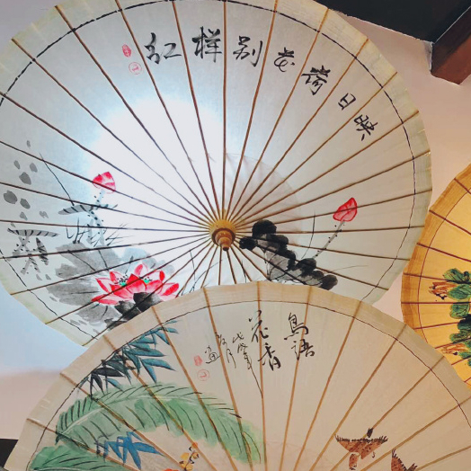
竹骨纸面，伞开如花，是福州传统手作中最具诗意的代表。
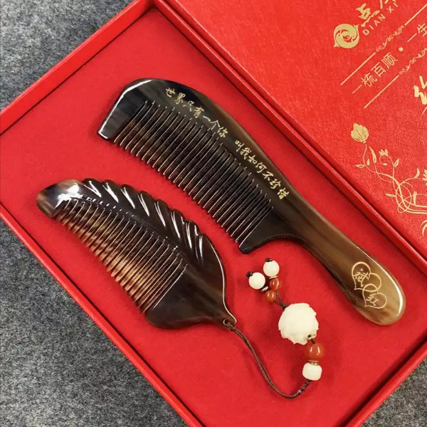
天然牛角打磨成器，温润细腻，承载日用之美。
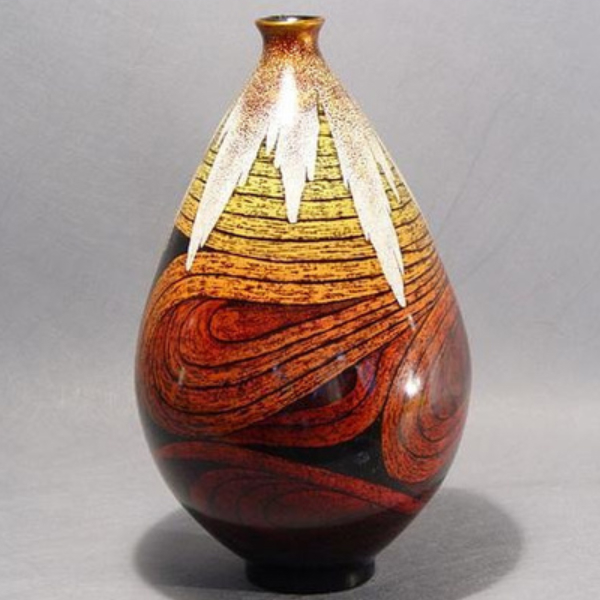
轻巧华美，漆色层叠，展现福州工艺的精巧与雅致。
HERITAGE SPOTS
从生活器物到非遗展示，油纸伞在传承中留下历史、审美与民俗祝福的多重印记。
从民间生活到非遗展示，油纸伞在婚嫁、祈福、出行与节庆中留下了深厚文化记忆。
伞面绘画与书法题字结合，让手作不止于实用，也成为承载江南审美的视觉符号。
通过研学体验、文创开发与校园课程，让传统工艺被更多年轻人看见和参与。
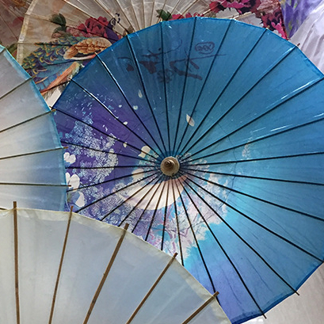
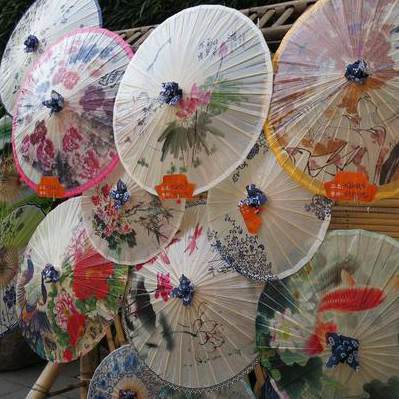
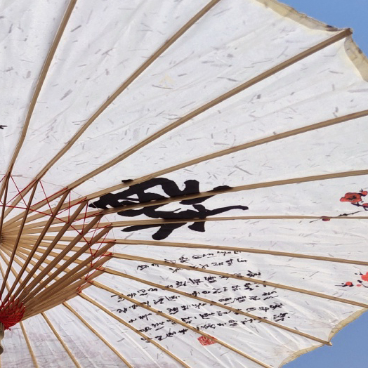
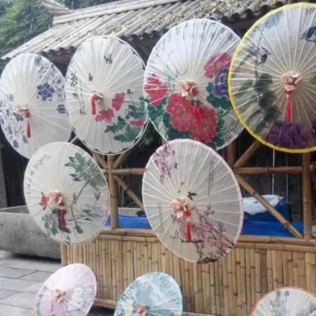
伞影MOVING UMBRELLA
伞面图带缓缓流动，漂浮光点与雨线交织，呈现雨巷里纸伞轻移的画面感。
HERITAGE RIVER
以长卷方式串联油纸伞的发展脉络，看见传统手艺从民间日用走向当代展示。
油纸伞逐渐融入福州民间生活，成为出行、婚嫁、祈福的常见器物。
福州伞业繁荣，街巷作坊中形成相对完整的竹骨纸面制作体系。
油纸伞通过展示、研学与文创走入公众视野，传统技艺继续焕发新生。
用设计、摄影和互动网页让古老纸伞拥有新的传播方式。
HANDMADE PROCESS
一把纸伞要经历选竹、制骨、糊纸、上油等多道手工步骤，细节决定开合之间的风骨。
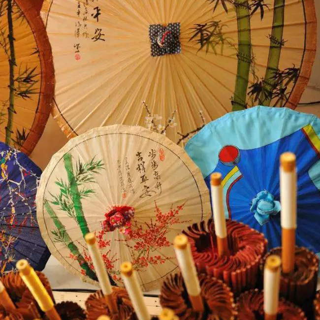
取韧性好、纹理直的竹材。
削骨、钻孔、穿线，定出伞形。
铺平纸面，保持圆整服帖。
桐油防水，也带来温润光泽。
UMBRELLA GALLERY
不同色彩、图案与场景的油纸伞组合成一面展墙，展示传统工艺的多样面貌。
伞面层叠，色彩像节庆灯影。
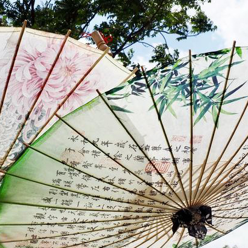
淡墨与伞骨形成清雅节奏。
红伞与旧景营造古朴画面。
清凉色调带来江南雨意。
彩伞像盛开的花。
传统手艺融入城市角落。
红、黄、蓝、紫交织出明亮氛围。
书画线条藏在伞骨之间。
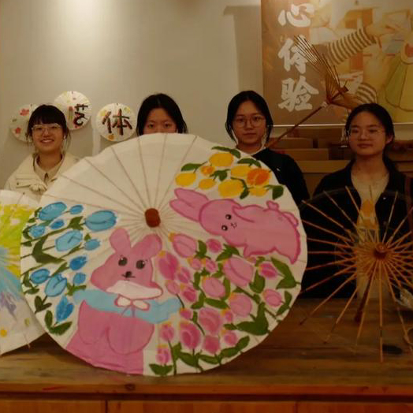
手艺与展示空间相遇。
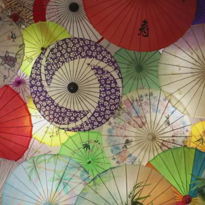
NEW HERITAGE
新生代传承人把传统工艺带进校园、研学和文创场景，让油纸伞从静态陈列走向可体验、可传播的生活美学。
“每一把伞，都是手艺人与时间完成的一次对话。”